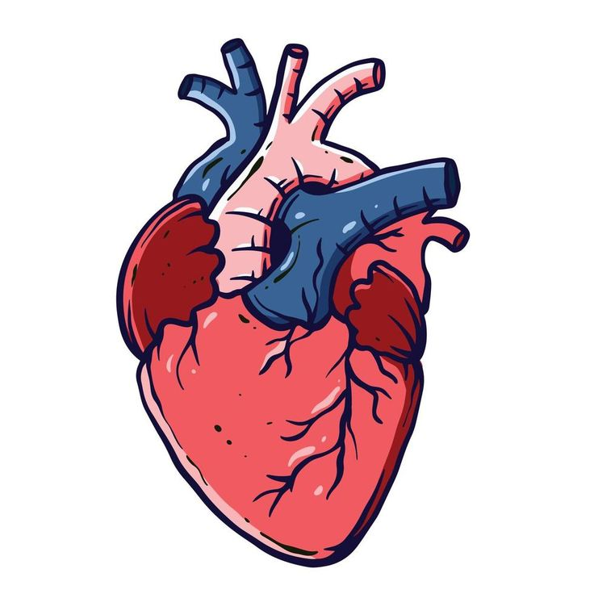
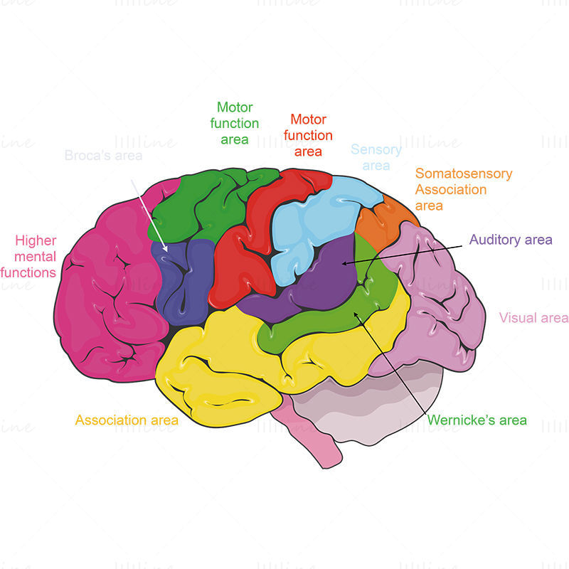
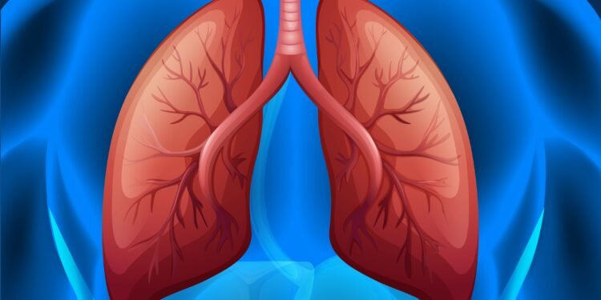

Coração
O coração bombeia sangue rico em oxigênio dos pulmões para todas as partes do corpo através das artérias e, em seguida, coleta o sangue de volta nas veias para ser oxigenado novamente nos pulmões. O coração regula a pressão sanguínea ao ajustar a força e a frequência de suas contrações, garantindo um fluxo sanguíneo adequado para todo o organismo.
O sangue transportado pelo coração contém nutrientes, oxigênio e outras substâncias essenciais que são entregues às células do corpo para manter seu funcionamento adequado.
O coração também ajuda a remover resíduos metabólicos, como dióxido de carbono, que são transportados de volta para os pulmões para serem expelidos do corpo.

Cerebro
O cérebro é o responsável pelo controle dos movimentos voluntários e involuntários do corpo. Ele coordena a atividade muscular, permitindo que você realize tarefas como caminhar, falar, escrever e realizar atividades cotidianas. O cérebro regula funções corporais automáticas, como a frequência cardíaca, respiração, temperatura corporal, sono, fome, sede e digestão, garantindo o equilíbrio interno do organismo (homeostase).
O cérebro recebe informações sensoriais dos órgãos sensoriais, como os olhos, ouvidos, pele, nariz e língua. Ele interpreta essas informações para que você possa ver, ouvir, sentir o toque, cheirar e saborear o mundo ao seu redor.
O cérebro desempenha um papel crucial no controle das emoções e do humor. Ele regula a resposta emocional a estímulos externos e internos, influenciando sentimentos como alegria, tristeza, medo, raiva e amor.

Pulmão
Os pulmões realizam a troca de oxigênio e dióxido de carbono entre o ar inspirado e o sangue. Durante a inspiração, o oxigênio é absorvido pelos alvéolos pulmonares e transportado para o sangue, enquanto o dióxido de carbono é liberado do sangue para os alvéolos e expirado durante a expiração.
Os pulmões facilitam a ventilação pulmonar, que é o processo de entrada e saída de ar dos pulmões. Isso é realizado através da contração e relaxamento dos músculos respiratórios, como o diafragma e os músculos intercostais, permitindo a expansão e a contração dos pulmões.
Os pulmões filtram partículas nocivas do ar, como poeira, bactérias e outros contaminantes, antes que o ar alcance os alvéolos. Além disso, eles umidificam o ar inspirado para evitar o ressecamento das vias respiratórias.
